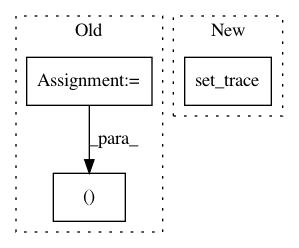

5b95c6888b15751d0ca2d77d0a01ea7f0abc338f,src/models.py,MultiTaskModel,_lm_forward,#MultiTaskModel#Any#Any#,401
Before Change
""" For translation, denoising, maybe language modeling? """
out = {}
b_size, seq_len = batch["inp_fwd"]["words"].size()
sent_fwd, mask_fwd = self.sent_encoder(batch["inp_fwd"])
sent_bwd, mask_bwd = self.sent_encoder(batch["trg_fwd"])
sent_fwd, _ = sent_fwd.split(int(sent_fwd.size(-1) / 2), dim=-1)
_, sent_bwd = sent_bwd.split(int(sent_bwd.size(-1) / 2), dim=-1)
After Change
logits_bwd = hid2voc(bwd[:,1:,:]).view(b_size * seq_len, -1)
logits = torch.cat([logits_fwd, logits_bwd], dim=0).view(2 * b_size * seq_len, -1)
out["logits"] = logits
pdb.set_trace()
if "trg_fwd" in batch:
targs = torch.cat([batch["trg_fwd"]["words"].view(-1),
batch["trg_bwd"]["words"].view(-1)])
In pattern: SUPERPATTERN
Frequency: 6
Non-data size: 3
Instances
Project Name: jsalt18-sentence-repl/jiant
Commit Name: 5b95c6888b15751d0ca2d77d0a01ea7f0abc338f
Time: 2018-06-24
Author: wang.alex.c@gmail.com
File Name: src/models.py
Class Name: MultiTaskModel
Method Name: _lm_forward
Project Name: tensorflow/minigo
Commit Name: 1d9d085252ecd9511791f94756fd9ea0adf7c2ea
Time: 2017-12-01
Author: jacksona@google.com
File Name: ds_wrangler.py
Class Name:
Method Name: gather_moves_and_write
Project Name: neuroailab/tnn
Commit Name: 0d14553fa39718c788b2c3064e24ec10cc218098
Time: 2016-10-07
Author: qbilius@gmail.com
File Name: model.py
Class Name:
Method Name: _construct_graph
Project Name: rodluger/starry
Commit Name: 67a85fa4252cd42499b2f4db49b0d1c191a00a0d
Time: 2019-05-02
Author: rodluger@gmail.com
File Name: tests/test_theano.py
Class Name:
Method Name: t3st_doppler
Project Name: jsalt18-sentence-repl/jiant
Commit Name: 9a4540b682074d3f84a2fc232cf2a832dc96bce7
Time: 2018-01-19
Author: wang.alex.c@gmail.com
File Name: src/aggregate_results.py
Class Name:
Method Name: latexify
Project Name: asyml/texar
Commit Name: 362ca59b47569f59909aa534f75abdb838b3aad9
Time: 2018-04-04
Author: zichaoy@cs.cmu.edu
File Name: examples/tsf/tsf_trainer.py
Class Name: TSFTrainer
Method Name: train